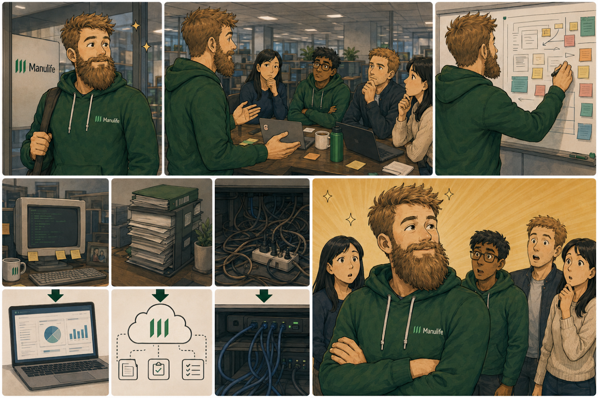
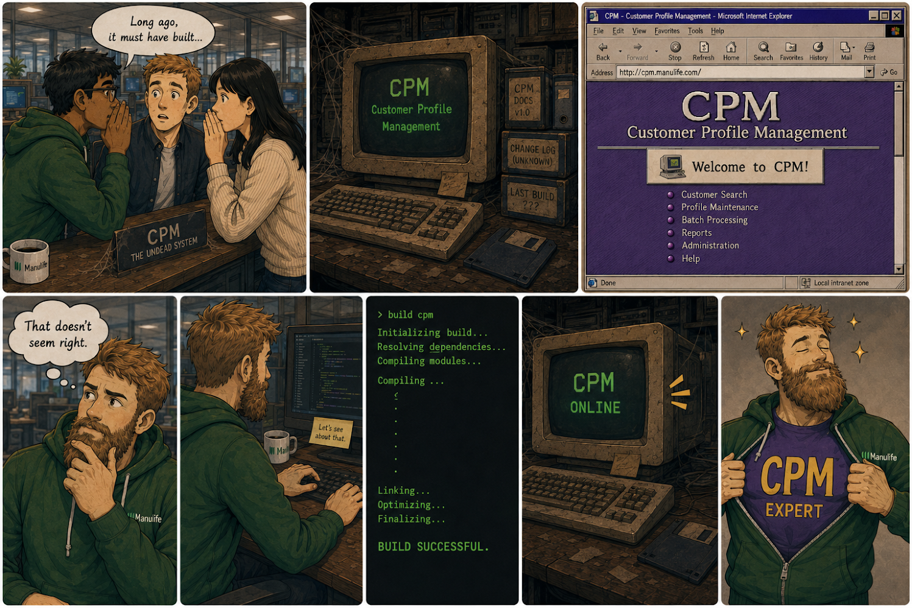
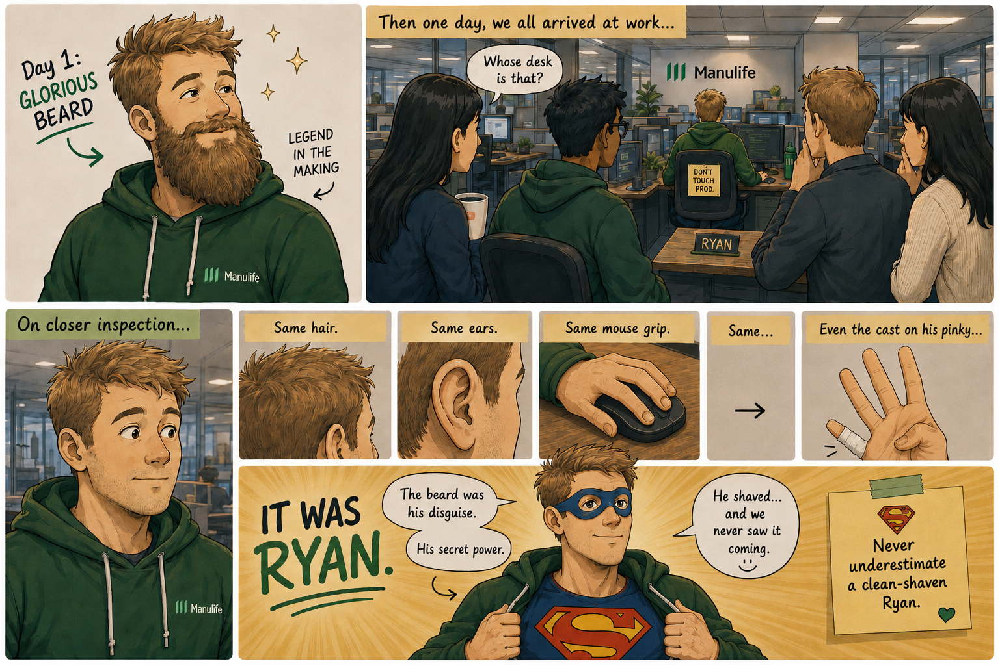
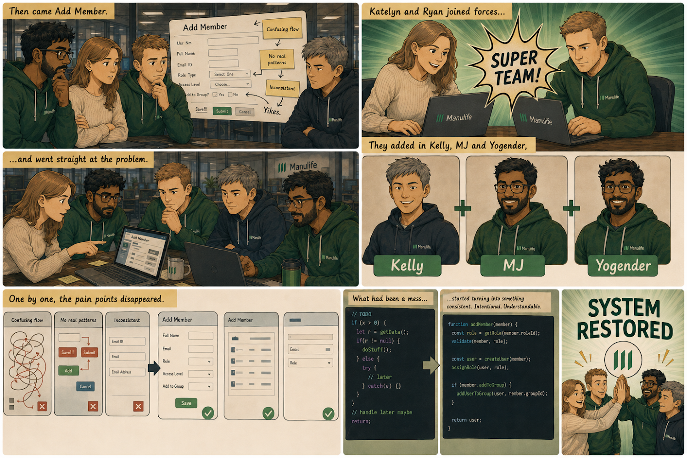
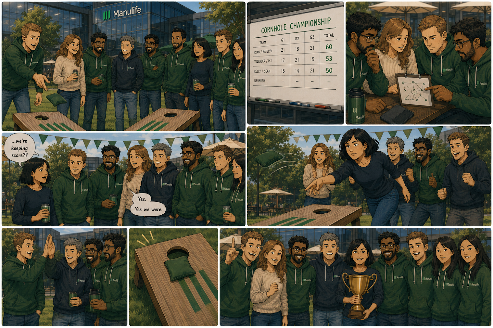
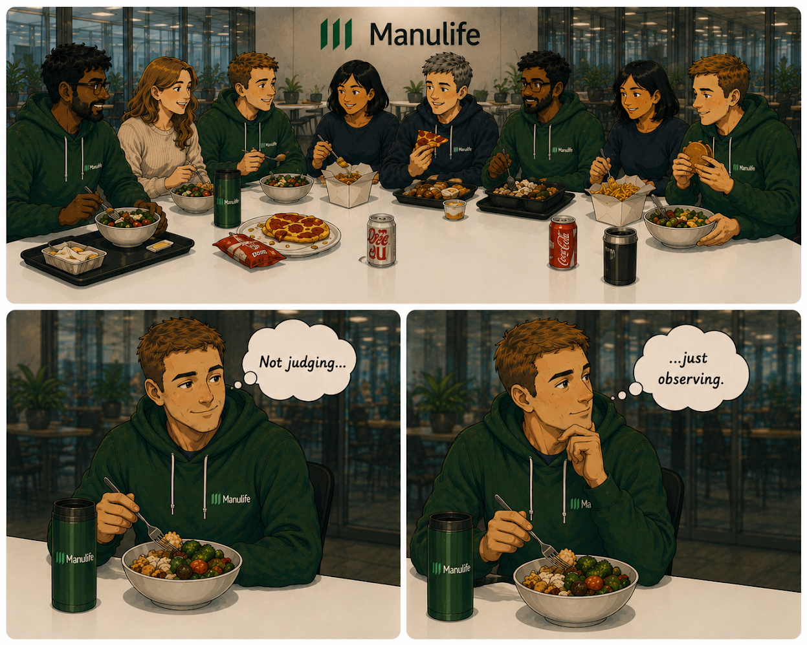
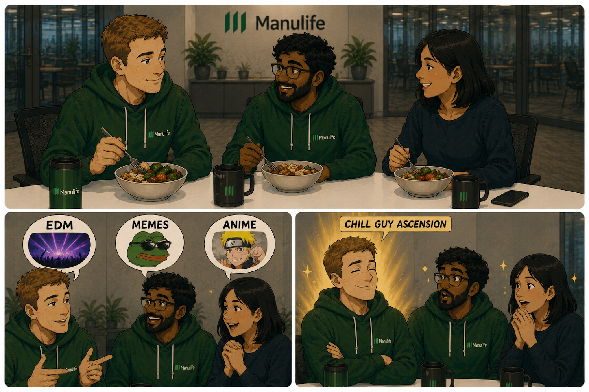
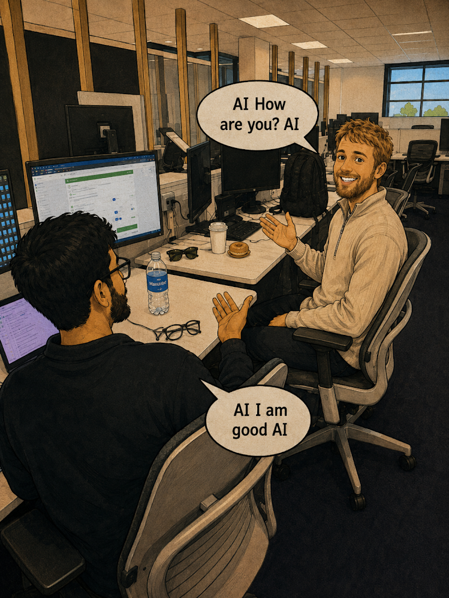
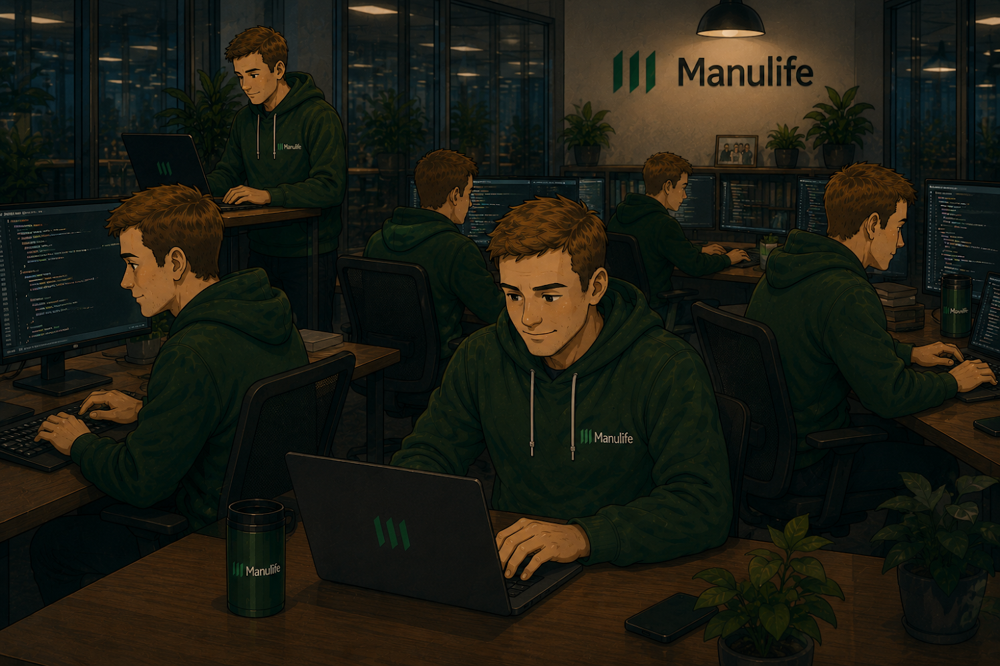
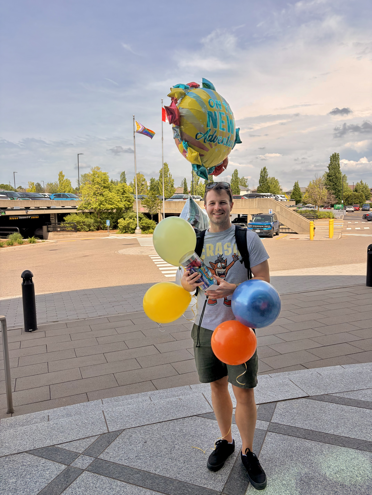

Ryan showed up to Manulife and, within approximately 7 minutes, made it clear:
Normally this is the kind of thing people say after working on the team for a while. Ryan instead skipped that step and just… started changing things.
Where some people saw “this is how it’s always been,” Ryan saw “this seems fixable in like… an afternoon?”. It was both inspiring and shocking.

CPM had not compiled for… let’s say… a culturally significant amount of time.
It had moved beyond software and into legend. New hires were told about it in hushed tones.
Ryan heard this and thought, “that doesn't seem right,” and then made it compile again.
Just like that. No ceremony. No trophy.

One day, someone new was sitting at Ryan’s desk.
At least… that’s what we all thought at first.
People walked by, did a double take, and kept going—slightly confused but too polite to ask.
Upon further inspection, we realized:
…it was Ryan.
He had shaved his beard.
Same person. Same everything else. Just suddenly unrecognizable. It took a full adjustment period for the team to mentally recompile.
A rare case where the biggest change Ryan made wasn’t to the codebase—it was to his face.

Then came Add Member.
At this point, everyone had been collectively complaining about the UI - confusing flow, no real patterns, and just enough inconsistency to keep things interesting (in the worst way).
This is when Katelyn and Ryan joined forces... because every good superhero needs backup.
They added in Kelly, MJ and Yogender, and went straight at the problem.
What had been a mess of one-off decisions and “we’ll deal with it later” code, started turning into something consistent. Intentional. Understandable.
One by one, the pain points disappeared.

At one of the social committee events, a casual game of cornhole quickly became… not casual.
Most of the team formed what can only be described as a highly competitive unit. Scores were tracked. Strategies were discussed. Pride was on the line.
Yes. Yes we were.
Fast forward to the following year - Bahareh swung in at the 11th hour, and showed us that she does, in fact, have Corn Hole skills.
No buildup. No trash talk. Just a calm, decisive victory.

Team lunches were always a good time - but also a study in contrast.
Ryan would show up with a healthy, well-balanced meal. Thoughtful. Nutritious. Responsible.
The rest of us arrived with cafeteria food that could be described as “a choice.”

Ryan was already impressive.
But then we discovered his preferences in:
And just like that, he evolved.

One of Yogender’s favorite memories of Ryan was a small, simple one from the office.
Somewhere along the way, they stopped greeting each other with a normal “hi.” Instead, everything became “AI.” It was their greeting, their answer, their running joke for just about everything. Every question, every problem, every random thought—“AI” was always the response.
Now and then, Yogender would glance over at the exact same moment Ryan did, and without missing a beat, they’d both say it in perfect unison.
Somehow, it never stopped being funny.

At some point, the math stopped adding up.
Patterns improving. Systems fixed. CPM revived. Random issues disappearing.
There’s no way this was one person.

Now Ryan moves on - new job, moving in with his girlfriend, and almost certainly about to improve another codebase whether they’re ready or not.
We walked him out together, like we were sending a kid off to their first day of school—proud, a little sentimental, and aware things won’t be quite the same.
Wherever he goes, things will get better.
And here, we’re left with improved patterns, better code… and the quiet realization that we probably should have cloned him when we had the chance.
